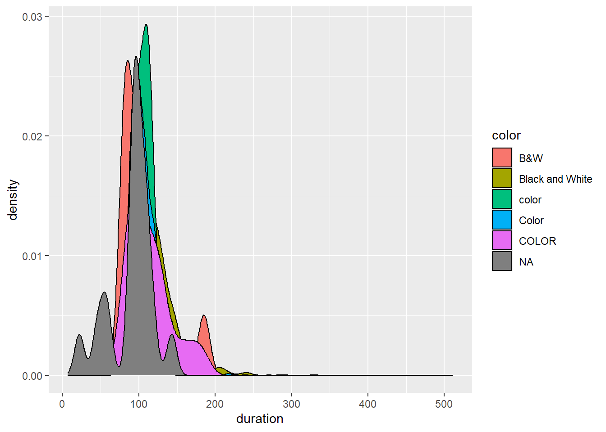

the dataset is from Kaggle, but the data itself is from TMBd
metadata on 5000 movies (ie homepage, id, original title, overview, popularity, production companies, production countries, release date, spoken languages, status, tagline, vote_average)
generated from The Movie Database API
21.2 Exercise 2
# part a: absolute pathlibrary(tidyverse)
── Attaching core tidyverse packages ──────────────────────── tidyverse 2.0.0 ──
✔ dplyr 1.1.4 ✔ readr 2.1.5
✔ forcats 1.0.0 ✔ stringr 1.5.1
✔ ggplot2 3.5.1 ✔ tibble 3.2.1
✔ lubridate 1.9.4 ✔ tidyr 1.3.1
✔ purrr 1.0.2
── Conflicts ────────────────────────────────────────── tidyverse_conflicts() ──
✖ dplyr::filter() masks stats::filter()
✖ dplyr::lag() masks stats::lag()
ℹ Use the conflicted package (<http://conflicted.r-lib.org/>) to force all conflicts to become errors
New names:
Rows: 5043 Columns: 29
── Column specification
──────────────────────────────────────────────────────── Delimiter: "," chr
(12): color, director_name, actor_2_name, genres, actor_1_name, movie_ti... dbl
(17): ...1, num_critic_for_reviews, duration, director_facebook_likes, a...
ℹ Use `spec()` to retrieve the full column specification for this data. ℹ
Specify the column types or set `show_col_types = FALSE` to quiet this message.
• `` -> `...1`
# part cimdb_temp <-read_csv("..\\data\\imdb_5000_messy.csv")
New names:
Rows: 5043 Columns: 29
── Column specification
──────────────────────────────────────────────────────── Delimiter: "," chr
(12): color, director_name, actor_2_name, genres, actor_1_name, movie_ti... dbl
(17): ...1, num_critic_for_reviews, duration, director_facebook_likes, a...
ℹ Use `spec()` to retrieve the full column specification for this data. ℹ
Specify the column types or set `show_col_types = FALSE` to quiet this message.
• `` -> `...1`
# part d# Try importing only the first 5 rowsread_csv("..\\data\\imdb_5000_messy.csv", n_max =5)
New names:
Rows: 5 Columns: 29
── Column specification
──────────────────────────────────────────────────────── Delimiter: "," chr
(12): color, director_name, actor_2_name, genres, actor_1_name, movie_ti... dbl
(17): ...1, num_critic_for_reviews, duration, director_facebook_likes, a...
ℹ Use `spec()` to retrieve the full column specification for this data. ℹ
Specify the column types or set `show_col_types = FALSE` to quiet this message.
• `` -> `...1`
# A tibble: 5 × 29
...1 color director_name num_critic_for_reviews duration
<dbl> <chr> <chr> <dbl> <dbl>
1 1 Color James Cameron 723 178
2 2 Color Gore Verbinski 302 169
3 3 Color Sam Mendes 602 148
4 4 Color Christopher Nolan 813 164
5 5 <NA> Doug Walker NA NA
# ℹ 24 more variables: director_facebook_likes <dbl>,
# actor_3_facebook_likes <dbl>, actor_2_name <chr>,
# actor_1_facebook_likes <dbl>, gross <dbl>, genres <chr>,
# actor_1_name <chr>, movie_title <chr>, num_voted_users <dbl>,
# cast_total_facebook_likes <dbl>, actor_3_name <chr>,
# facenumber_in_poster <dbl>, plot_keywords <chr>, movie_imdb_link <chr>,
# num_user_for_reviews <dbl>, language <chr>, country <chr>, …
Exercise 3
# part bimdb_messy |>mutate(across(where(is.character), as.factor)) |># convert characters to factors in order to summarizesummary()
...1 color director_name
Min. : 1 B&W : 10 Steven Spielberg: 26
1st Qu.:1262 Black and White: 199 Woody Allen : 22
Median :2522 color : 30 Clint Eastwood : 20
Mean :2522 Color :4755 Martin Scorsese : 20
3rd Qu.:3782 COLOR : 30 Ridley Scott : 17
Max. :5043 NA's : 19 (Other) :4834
NA's : 104
num_critic_for_reviews duration director_facebook_likes
Min. : 1.0 Min. : 7.0 Min. : 0.0
1st Qu.: 50.0 1st Qu.: 93.0 1st Qu.: 7.0
Median :110.0 Median :103.0 Median : 49.0
Mean :140.2 Mean :107.2 Mean : 686.5
3rd Qu.:195.0 3rd Qu.:118.0 3rd Qu.: 194.5
Max. :813.0 Max. :511.0 Max. :23000.0
NA's :50 NA's :15 NA's :104
actor_3_facebook_likes actor_2_name actor_1_facebook_likes
Min. : 0.0 Morgan Freeman : 20 Min. : 0
1st Qu.: 133.0 Charlize Theron: 15 1st Qu.: 614
Median : 371.5 Brad Pitt : 14 Median : 988
Mean : 645.0 James Franco : 11 Mean : 6560
3rd Qu.: 636.0 Meryl Streep : 11 3rd Qu.: 11000
Max. :23000.0 (Other) :4959 Max. :640000
NA's :23 NA's : 13 NA's :7
gross genres actor_1_name
Min. : 162 Drama : 236 Robert De Niro: 49
1st Qu.: 5340988 Comedy : 209 Johnny Depp : 41
Median : 25517500 Comedy|Drama : 191 Nicolas Cage : 33
Mean : 48468408 Comedy|Drama|Romance: 187 J.K. Simmons : 31
3rd Qu.: 62309438 Comedy|Romance : 158 Bruce Willis : 30
Max. :760505847 Drama|Romance : 152 (Other) :4852
NA's :884 (Other) :3910 NA's : 7
movie_title num_voted_users cast_total_facebook_likes
Ben-Hur : 3 Min. : 5 Min. : 0
Halloween : 3 1st Qu.: 8594 1st Qu.: 1411
Home : 3 Median : 34359 Median : 3090
King Kong : 3 Mean : 83668 Mean : 9699
Pan : 3 3rd Qu.: 96309 3rd Qu.: 13756
The Fast and the Furious : 3 Max. :1689764 Max. :656730
(Other) :5025
actor_3_name facenumber_in_poster
Ben Mendelsohn: 8 Min. : 0.000
John Heard : 8 1st Qu.: 0.000
Steve Coogan : 8 Median : 1.000
Anne Hathaway : 7 Mean : 1.371
Jon Gries : 7 3rd Qu.: 2.000
(Other) :4982 Max. :43.000
NA's : 23 NA's :13
plot_keywords
based on novel : 4
1940s|child hero|fantasy world|orphan|reference to peter pan : 3
alien friendship|alien invasion|australia|flying car|mother daughter relationship: 3
animal name in title|ape abducts a woman|gorilla|island|king kong : 3
assistant|experiment|frankenstein|medical student|scientist : 3
(Other) :4874
NA's : 153
movie_imdb_link
http://www.imdb.com/title/tt0077651/?ref_=fn_tt_tt_1: 3
http://www.imdb.com/title/tt0232500/?ref_=fn_tt_tt_1: 3
http://www.imdb.com/title/tt0360717/?ref_=fn_tt_tt_1: 3
http://www.imdb.com/title/tt1976009/?ref_=fn_tt_tt_1: 3
http://www.imdb.com/title/tt2224026/?ref_=fn_tt_tt_1: 3
http://www.imdb.com/title/tt2638144/?ref_=fn_tt_tt_1: 3
(Other) :5025
num_user_for_reviews language country content_rating
Min. : 1.0 English :4704 USA :3807 R :2118
1st Qu.: 65.0 French : 73 UK : 448 PG-13 :1461
Median : 156.0 Spanish : 40 France : 154 PG : 701
Mean : 272.8 Hindi : 28 Canada : 126 Not Rated: 116
3rd Qu.: 326.0 Mandarin: 26 Germany: 97 G : 112
Max. :5060.0 (Other) : 160 (Other): 406 (Other) : 232
NA's :21 NA's : 12 NA's : 5 NA's : 303
budget title_year actor_2_facebook_likes imdb_score
Min. :2.180e+02 Min. :1916 Min. : 0 Min. :1.600
1st Qu.:6.000e+06 1st Qu.:1999 1st Qu.: 281 1st Qu.:5.800
Median :2.000e+07 Median :2005 Median : 595 Median :6.600
Mean :3.975e+07 Mean :2002 Mean : 1652 Mean :6.442
3rd Qu.:4.500e+07 3rd Qu.:2011 3rd Qu.: 918 3rd Qu.:7.200
Max. :1.222e+10 Max. :2016 Max. :137000 Max. :9.500
NA's :492 NA's :108 NA's :13
aspect_ratio movie_facebook_likes
Min. : 1.18 Min. : 0
1st Qu.: 1.85 1st Qu.: 0
Median : 2.35 Median : 166
Mean : 2.22 Mean : 7526
3rd Qu.: 2.35 3rd Qu.: 3000
Max. :16.00 Max. :349000
NA's :329
What type of info is provided on quantitative variables?
Stuff about the movie actors/directors or plot or movie itself: title, color, director, actor names, genre, plot keywords, lagnuage What type of info is provided on categorical variables?
Info about movie statistics: revenue, rating on IMDB, facebook likes What stands out to you in these summaries? Is there anything you’d need to clean before using this data?
some inconsistencies with spelling or formatting (ie different ways of saying color–COLOR, color, Color)
a decent amount of NA’s or data missing
21.3 Exercise 4
the formatting of categories within the variable “color” isn’t consistent
“color” has 6 categories (ie color, Color, COLOR or B&W, Black and White, and NA)
the largest is Color, but there are a few “COLOR” or “color” movies
imdb_messy |>count(color)
# A tibble: 6 × 2
color n
<chr> <int>
1 B&W 10
2 Black and White 199
3 COLOR 30
4 Color 4755
5 color 30
6 <NA> 19
21.4 Exercise 5
# clean using factorsimdb_temp <- imdb_messy |>mutate(color =fct_recode(color, "Color"="COLOR","Color"="color","Black_White"="Black and White","Black_White"="B&W")) imdb_temp |>count(color)
# A tibble: 3 × 2
color n
<fct> <int>
1 Black_White 209
2 Color 4815
3 <NA> 19
# clean using strings!imdb_temp <- imdb_messy |>mutate(color =str_to_lower(color),color =str_replace(color, "black and white", "Black_white"),color =str_replace(color, "b&w", "Black_white"),color =str_replace(color, "color", "Color"))imdb_temp |>count(color)
# A tibble: 3 × 2
color n
<chr> <int>
1 Black_white 209
2 Color 4815
3 <NA> 19
21.5 Exercise 6
# Count the total number of rows in imdb_messycount(imdb_messy)
# A tibble: 1 × 1
n
<int>
1 5043
# Then count the number of NAs in each columncolSums(is.na(imdb_messy))
# Then count the number of NAs in a specific columnimdb_messy |>filter(is.na(actor_1_facebook_likes))
# A tibble: 7 × 29
...1 color director_name num_critic_for_reviews duration
<dbl> <chr> <chr> <dbl> <dbl>
1 4503 Color Léa Pool 23 97
2 4520 Color Harry Gantz 12 105
3 4721 Color U. Roberto Romano 3 80
4 4838 Color Pan Nalin 15 102
5 4946 Color Amal Al-Agroobi NA 62
6 4947 Color Andrew Berends 12 90
7 4991 Color Jem Cohen 12 111
# ℹ 24 more variables: director_facebook_likes <dbl>,
# actor_3_facebook_likes <dbl>, actor_2_name <chr>,
# actor_1_facebook_likes <dbl>, gross <dbl>, genres <chr>,
# actor_1_name <chr>, movie_title <chr>, num_voted_users <dbl>,
# cast_total_facebook_likes <dbl>, actor_3_name <chr>,
# facenumber_in_poster <dbl>, plot_keywords <chr>, movie_imdb_link <chr>,
# num_user_for_reviews <dbl>, language <chr>, country <chr>, …
21.6 Exercise 7
# removed the NA'simdb_temp |>summarize(avg_duration =mean(duration, na.rm=TRUE))
# A tibble: 1 × 1
avg_duration
<dbl>
1 107.
# drop_na() gets rid of any data entries that contain an "NA"# gets rid of entries that could be helpful (ie NA for a different variable, but not for the one we care about, would be removed)imdb_temp <-drop_na(imdb_messy)nrow(imdb_temp)
[1] 3756
ggplot(imdb_messy, aes(x = duration, fill = color)) +geom_density()
Warning: Removed 15 rows containing non-finite outside the scale range
(`stat_density()`).

imdb_temp <- imdb_messy |>filter(!is.na(duration), !is.na(color))nrow(imdb_temp) # now we have 5010 movies! (as opposed to 3756 from above when we used drop_na()
[1] 5010
# plot (no grey "NA" graph)ggplot(imdb_temp, aes(x=duration, fill = color))+geom_density()
# A tibble: 1 × 1
`sum(is.na(actor_1_facebook_likes))`
<int>
1 0
Source Code
---title: "Data Import"format: html---# Exercises {.unnumbered}## Exercise 1### Part b* the dataset is from Kaggle, but the data itself is from TMBd* metadata on 5000 movies (ie homepage, id, original title, overview, popularity, production companies, production countries, release date, spoken languages, status, tagline, vote_average)* generated from The Movie Database API## Exercise 2```{r}# part a: absolute pathlibrary(tidyverse)imdb_messy <-read_csv("C:\\Users\\sarah\\OneDrive\\Documents\\GitHub\\portfolio-sradz\\data\\imdb_5000_messy.csv")``````{r}# part bgetwd()``````{r}# part cimdb_temp <-read_csv("..\\data\\imdb_5000_messy.csv")``````{r}# part d# Try importing only the first 5 rowsread_csv("..\\data\\imdb_5000_messy.csv", n_max =5)```## Exercise 3 {.unnumbered}```{r}# part bimdb_messy |>mutate(across(where(is.character), as.factor)) |># convert characters to factors in order to summarizesummary()```* What type of info is provided on quantitative variables? * Stuff about the movie actors/directors or plot or movie itself: title, color, director, actor names, genre, plot keywords, lagnuage What type of info is provided on categorical variables? * Info about movie statistics: revenue, rating on IMDB, facebook likesWhat stands out to you in these summaries? Is there anything you’d need to clean before using this data? * some inconsistencies with spelling or formatting (ie different ways of saying color--COLOR, color, Color) * a decent amount of NA's or data missing## Exercise 4* the formatting of categories within the variable "color" isn't consistent * "color" has 6 categories (ie color, Color, COLOR or B&W, Black and White, and NA)* the largest is Color, but there are a few "COLOR" or "color" movies```{r}imdb_messy |>count(color)```## Exercise 5```{r}# clean using factorsimdb_temp <- imdb_messy |>mutate(color =fct_recode(color, "Color"="COLOR","Color"="color","Black_White"="Black and White","Black_White"="B&W")) imdb_temp |>count(color)``````{r}# clean using strings!imdb_temp <- imdb_messy |>mutate(color =str_to_lower(color),color =str_replace(color, "black and white", "Black_white"),color =str_replace(color, "b&w", "Black_white"),color =str_replace(color, "color", "Color"))imdb_temp |>count(color)```## Exercise 6```{r}# Count the total number of rows in imdb_messycount(imdb_messy)# Then count the number of NAs in each columncolSums(is.na(imdb_messy))# Then count the number of NAs in a specific columnimdb_messy |>filter(is.na(actor_1_facebook_likes))```## Exercise 7```{r}# removed the NA'simdb_temp |>summarize(avg_duration =mean(duration, na.rm=TRUE))``````{r}# drop_na() gets rid of any data entries that contain an "NA"# gets rid of entries that could be helpful (ie NA for a different variable, but not for the one we care about, would be removed)imdb_temp <-drop_na(imdb_messy)nrow(imdb_temp)``````{r}ggplot(imdb_messy, aes(x = duration, fill = color)) +geom_density()``````{r}imdb_temp <- imdb_messy |>filter(!is.na(duration), !is.na(color))nrow(imdb_temp) # now we have 5010 movies! (as opposed to 3756 from above when we used drop_na()# plot (no grey "NA" graph)ggplot(imdb_temp, aes(x=duration, fill = color))+geom_density()``````{r}imdb_temp <- imdb_messy |>mutate(actor_1_facebook_likes =replace_na(actor_1_facebook_likes, 0))imdb_temp |>summarize(sum(is.na(actor_1_facebook_likes)))```